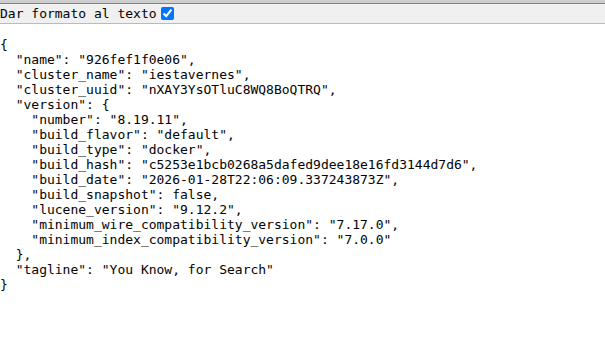
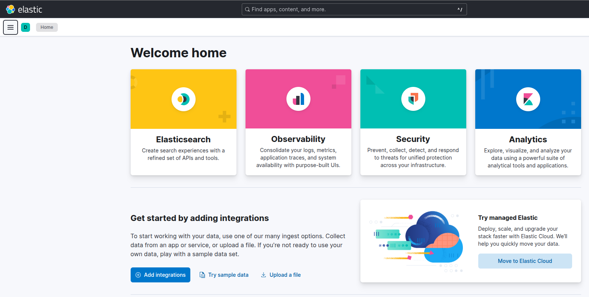
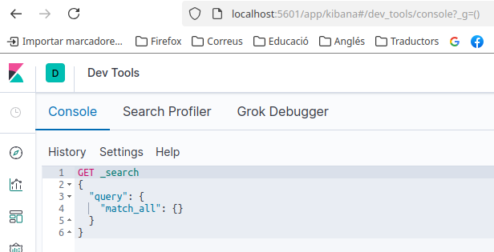

STACK ELK PRÀCTIC
Anem a preparar un entorn de treball per a poder practicar els components principals de Elastic. Treballarem amb Docker per a desplegar els components d'Elastic i Kibana. L'arxiu docker-compose.yml que utilitzarem el teniu en Aules. De totes formes ací podeu veure els principals serveis:
services:
Node-RED
node-redELK:
container_name: nodeRED_ELK
environment:
SERVER_NAME: localhost
ELASTICSEARCH_URL: http://elasticsearch:9200/
image: nodered/node-red:latest
user: "1000:0"
restart: unless-stopped
volumes:
- "./node-red:/data"
ports:
- "1880:1880"
networks:
- elk
Elastic Search
elasticsearch:
restart: always
image: docker.elastic.co/elasticsearch/elasticsearch:8.19.11
container_name: elasticsearch
environment:
- cluster.name=iestavernes
- discovery.type=single-node
- xpack.security.enabled=true
- ELASTIC_PASSWORD=tavernes
ulimits:
memlock:
soft: -1
hard: -1
healthcheck:
test: curl --cacert /usr/share/elasticsearch/config/certs/ca/ca.crt -s https://localhost:9200 >/dev/null; if [[ $$? == 52 ]]; then echo 0; else echo 1; fi
interval: 30s
timeout: 10s
retries: 5
ports:
- '9200:9200'
networks:
- elk
user: "1000:0"
logging:
driver: 'json-file'
options:
max-size: '100m'
max-file: '10'
Kibana
kibana:
restart: always
image: docker.elastic.co/kibana/kibana:8.19.11
user: "1000:0"
container_name: kibana
depends_on:
- elasticsearch
environment:
- SERVER_NAME=kibana.localhost
- ELASTICSEARCH_URL=http://elasticsearch:9200
- ELASTICSEARCH_HOST=elasticsearch
- ELASTICSEARCH_PORT=9200
- xpack.security.enabled=true
- ELASTICSEARCH_USERNAME=kibana_system
- ELASTICSEARCH_PASSWORD=tavernes
- SERVER_HOST=0.0.0.0
- NODE_OPTIONS="--max-old-space-size=3096"
healthcheck:
test: curl --cacert /usr/share/elasticsearch/config/certs/ca/ca.crt -s https://localhost:5601 >/dev/null; if [[ $$? == 52 ]]; then echo 0; else echo 1; fi
interval: 30s
timeout: 10s
retries: 5
ports:
- "5601:5601"
networks:
- elk
Networks
networks:
elk:
driver: bridge
Fixeu-vos que l'usuari per accedir als serveis, quan ho demane, és elastic i la contrasenya tavernes. En principi hauriem de treballar amb altres usuarios, perquè elastic és superusuari, però per veure com va tot ens anirà bé.
A més, tenim un Node-RED per a poder treballar amb dades. Aneu en compte amb els ports i els noms dels serveis que ja teniu en marxa d'altres contenidors que hem creat en classe. Podeu canviar l'arxiu docker-compose si és necessari. També podeu parar o eliminar contenidors que ja no aneu a utilitzar.
Desplegar el stack ELK
Baixeu l'arxiu docker-compose-elk.yml que teniu a Aules. El copieu a una carpeta específica per treballar amb elk. Canvieu-li el nom a docker-compose.yml per si no voleu posar el nom cada vegada que executeu les comandes de docker compose.
Alcem els contenidors com sempre:
docker-compose up -d
Si teniu problemes amb els permisos, recordeu que podeu crear la carpeta del volum (node-red) manualment abans d'executar el docker compose.
Comprovem amb docker ps que tots els serveis estan en marxa i en estat healty. Si no és així, podeu veure els logs del servei que no funciona correctament amb docker compose logs <nom-del-contenidor>.
Quan tots els contenidors estiguen en marxa: executem les següents instruccions des de la consola:
docker compose exec elasticsearch bin/elasticsearch-reset-password -u elastic -i
docker compose exec elasticsearch bin/elasticsearch-reset-password -u kibana_system -i
En els dos casos, quan vos demane el password poseu tavernes. Així ja tindreu el password de l'usuari elastic i de l'usuari kibana_system.
Este pas no hauria de ser necessari, però sembla ser que ara s'ha de fer així la primera vegada.
Comprovar que funciona
De moment les úniques comprovacions que podem fer eś intentar accedir a Elastic i a Kibana des del navegador i veure si s'obrin les pàgines.
Posa en el navegador http://localhost:9200 per a accedir a Elastic. Posa usuari elastic i contrasenya tavernes. T'hauria d'aparéixer alguna cosa com:

Ara entra en http://localhost:5601 per a accedir a Kibana. L'usuari i la contrasenya haurien de ser igual (elastic i tavernes). Comprova que entres a la pàgina principal de Kibana.

Elastic des de Node-RED
En aules també teniu un arxiu JSON (Node-RED Elasticsearch.json) per a explicar com funciona Elastic i veure alguns exemples.
Elastic des de Kibana
Dins de Kibana treballarem amb el dev-tools, que està accessible des de la barra lateral esquerra amb una icona que té forma de clau anglesa. Aquesta eina ens permet fer consultes a Elastic i veure els resultats. La pantalla se veu així:

Des d'esta pantalla provarem les peticions que enviem a la base de dades d'Elastic. Teniu en aules un arxiu anomenat Queries_elasticsearch.txt amb algunes consultes que anem a provar.
Exemples de queries
Estes queries que anem a veure se poden fer des de Kibana, escrivint-les tal qual al dev-tools, o des de Node-RED tal com teniu en l'exemple que heu importat. També es poden fer alguns GETs directament des del navegador, i també podrieu utilitzar eines com Postman, curl o Hoopscotch per a fer proves.
Anem a Kibana (localhost:5601), en el menú de l'esquerra aneu a Management i Dev-Tools, i proveu les següents operacions:
Llistar els indexs que tenim en Elastic
Des del dev-tools executem la següent comanda:
GET /_cat/indices
Veurem el resultat.
També obtenim el mateix resultat si executem la petició des de la url d'elastic: http://localhost:9200/_cat/indices
Crear un índex nou
PUT /exam?pretty
Si ara tornàrem a executar la consulta GET /_cat/indices veuríem que tenim un nou índex anomenat exam.
Crear un índex amb certes característiques
En este cas anem a especificar quants shards i rèpliques volem que tinga el nou índex.
PUT /facebook?pretty
{
"settings" : {
"index" : {
"number_of_shards" : 3,
"number_of_replicas" : 2
}
}
}
Si ara fem un GET /facebook/_settings veurem les característiques de l'índex.
Un altre índex
PUT instagram
{
"settings" : {
"number_of_shards" : 3,
"number_of_replicas" : 2
}
}
Eliminar un índex
DELETE /instagram
Si intentem eliminar un índex que no existeix, per exemple fent DELETE /twitter, ens donarà un error.
Crear un índex amb propietats
A més de la propietat settings també podem afegir una propietat mappings per a definir els camps que tindrà l'índex. No és necessari, però si volem definir noms i tipus de dades dels camps ho farem de la següent forma:
PUT prueba
{
"settings" : {
"number_of_shards" : 1
},
"mappings" : {
"properties" : {
"age" : { "type" : "long" },
"name": { "type": "text"}
}
}
}
Si ara fem un GET /prueba/_mapping veurem les propietats de l'índex.
Veure l'estat d'un índex
GET /prueba/_stats
Afegir un document a un índex
POST /facebook/_doc
{
"nick": "Hannon",
"email": "joselito@gmail.com"
}
Consultar els documents d'un índex
GET /facebook/_search
Per defecte només se mostren 10 documents de l'index. A més no se sap si són els 10 primers o els 10 últims, ho fa en funció de l'indexació interna (els 10 primers documents que recupere).
Si volem veure una quantitat major ho farem de la següent forma:
GET /facebook/_search?size=1000
Recuperar l'últim document afegit
Com que no sabem quan demanem una quantitat de documents quins ens va a mostrar, podem demanar per exemple els últims que hem afegit. Per això farem servir un timestamp que no se crea automàticament, per tant l'haurem d'incloure quan afegim documents. Ja veurem com fer-ho. Demanem ordre descendent i només un document.
GET /facebook/_search
{
"query": {
"match_all": {}
},
"sort": [
{
"timestamp": "desc"
}
],
"size": 1
}
Podem canviar la propietat "size" per demanar més documents.
Consultar un document concret
Hauríem de saber l'id del document que volem consultar. Per exemple, si volem consultar el document amb id 1 de l'índex facebook:
GET /facebook/_doc/1
Teniu en compte que Elastic, com que no definim nosaltres l'id manualment, el crea automàticament i li assigna un valor alfanumèric aleatori. Per tant, el document amb id 1 no existirà. Mireu quin id li ha assignat Elastic al document que hem afegit i torneu a provar la consulta amb l'id correcte.
Consultar documents per condició
També podem consultar els documents que compleixen una condició:
GET /facebook/_search
{
"query": {
"match": {
"nick": "Hannon"
}
}
}
Amb versions anteriors d'Elastic se podia utilitzar les query string en la URL per fer consultes senzilles.
GET /facebook/_search?q=nick:Hannon
Ara bé, amb les últimes versions d'Elastic ha quedat obsolet l'ús de les query string.
Consultar els documents que tinguen un camp determinat (sense importar el valor)
GET /facebook/_search
{
"query": {
"exists": {
"field": "nick"
}
}
}
Quants documents té un índex
GET /exam/_count
Quants documents d'un índex compleixen una condició
GET /facebook/_count
{
"query": {
"match": {
"nick": "Hannon"
}
}
}
Més complex:
GET /exam/_count
{
"query": {
"bool": {
"must": [
{
"match_phrase": {
"type": "WeatherObserved"
}
},
{
"range":{
"date": {
"gte": "01/01/2022 00:30:00",
"lte": "11/01/2022 21:00:00"
}
}
}
]
}
}
}
També podem contar quants documents tenen una propietat determinada utilitzant exists com hem vist abans:
GET /facebook/_count
{
"query": {
"exists": {
"field": "nick"
}
}
}
Eliminar un document
DELETE /facebook/_doc/1
Eliminar tots els documents d'un índex
DELETE /facebook/_delete_by_query
{
"query": {
"match_all": {}
}
}
Modificar un document d'un índex
POST /facebook/_update/1
{
"doc": {
"nick": "Hannon",
"email": "hannon@gmail.com"
}
}
Modificar un camp d'un document
POST /facebook/_update/1
{
"doc": {
"nick": "Hannon"
}
}